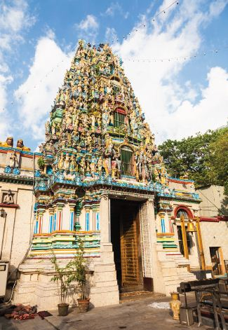
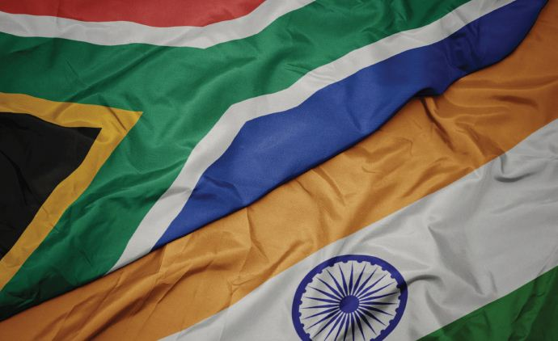

Indian Diaspora in Myanmar and South Africa: Historical Continuities and Contemporary Challenges
According to the Ministry of External Affairs (MEA), the population of Overseas Indians stands at more than 32 million. To put this in context, the figure of Overseas Indians is more than the combined total population of Australia and New Zealand. The large size of persons of Indian origin (PIOs) is a consequence of colonialism and of new political realities over old cultural geographies. Under British India, Indians were transported in large numbers to other colonies in close proximity as well as across vast continents. More often than not, PIOs were minorities in the recipient colonies and were vulnerable to narrow nationalist assertions. In many instances, the Indian diaspora were deployed by the colonial rulers in extractive industries and revenue generating sectors. Tragically, the fact that PIOs were a victim of colonialism and have also contributed to economic growth of host societies, even under difficult circumstances, tends to be unrecognized.
The advent of globalisation rejuvenated diaspora links with their home country. While the growth of social media has facilitated better communication and information flows, it has also played a significant role in ‘othering’ of these communities. The Indian diaspora across the globe has often had to navigate historical memories and associated complex political processes. In some cases, they tend to continue to face challenges. This paper highlights the historical continuities and contemporary challenges of PIOs from two distinct former British colonies – Myanmar and South Africa. The Indian diaspora have had similar historical experiences in these countries which have shaped current dynamics.
Myanmar
People to people interactions between India and Myanmar (Burma) has a long history. In ancient times, Burma was reportedly referred to as Brahmadesh in Indian literature. The Tamil Chola empire had extensive trade and economic relations with Burma and the history of Tamil ancestry in the country goes back to the first century AD.
In the 19th and 20th century, movement of people between India and Burma took place broadly for military, political and business purposes. There was a significant upswing in migration patterns from India to Myanmar during the British colonial rule. During the three Anglo- Burmese wars, large number of Indian foot soldiers were used by the British. Subsequently, many of the British regiments that manned the Burmese territories had PIOs. While in India, the British trained and employed Indians in the lower echelons of governance, even in Myanmar, Indians were used for their colonial apparatus. As a consequence, PIOs dominated formal employment opportunities in the colonial administrative apparatus. To facilitate expansion of agriculture, migration from India was encouraged. Further, for ease of migration, a “recruiting agent was appointed in India and subsidies were given to shipping companies to transport Indian
immigrants to Burma.” There was also a fairly large presence of Indian officials working on the revenue side of the rural areas and Indian labourers working in the docks, transport and rice mills. Burma was a province under British India, and was primarily governed from Calcutta. As a consequence, there was free movement of educated people from Calcutta to Rangoon and vice versa. Up until 1941, Rangoon comprised of over 50 per cent Indians, with Indian languages such as Tamil, Telugu, Hindi and Urdu as their lingua franca.
Moreover, Indian businesspersons moved to Burma to work with the British. Given the established interactions between Indians and the British by that time, Indians were more conversant with the functioning of the colonial state. They were therefore able to engage with rules and regulations that define business activity with relatively greater ease. Indian businesses flourished, although the ultimate beneficiaries were the British colonisers. The Chettiar community had a particularly robust presence in Burma and made their fortunes as “financers of agriculture and trade”. Moreover, people from Bengal moved to work in paddy fields in the Rakhine sector which has laid emerged in the form of sustained sectarian violence.
Sadly, the dominant Indian presence in the British army and the administrative frameworks of Burma along with the robust presence of Indians in the economic activities sowed the discord between the Indian and Burmese communities. The Burmese viewed the Indian presence as competition over scarce economic resources and as a consequence, there were anti-Indian riots in 1930 which resulted in the deaths of over 120 people and further deepened the discord between the Indian community and the Burmese population. Another round of anti-India rioting also broke out in 1938.
The Second World War resulted in significant decline of Indian population in Burma. The fact that many Indians manned the British colonial apparatus made them vulnerable to probable detention by the invading Japanese forces. To avoid getting captured by these forces and given the uncertainties associated with the war, it is estimated that over 400,000 people from lower Burma and other regions walked to Northeast India. This exodus is often termed as the Long March by people of Indian origin from Burma. At other times, migration took place from Northeast India to Northern Myanmar as well, and it continues even today. Each Indian northeast state which shares a border with Myanmar has their own equation with the adjacent Burmese provinces. Therefore, the Indian diaspora presence in Myanmar imuch larger than official statistics as such movement is difficult to tabulate.
After Burma’s independence. General Ne Win’s nationalisation policies resulted in government takeover of large number of enterprises including importexport trade. The Indian community was most hit by these measures and anti-Indian rhetoric prompted approximately 2,500 Indians to leave “each week”. By September 1964, an estimated “100,000 people were believed to have departed to India, many leaving behind their jewellery and other valued possessions.”
The challenge for Indian diasporas after the 1960s was that because of stigmatisation and nationalisation policies, many Burmese Indians found it difficult to participate in productive economic activities. In order to overcome the stigmatization, many Indians have adopted Burmese names and often list themselves as members of the Barman ethnic community. Nonetheless, the political representation is not pronounced.
There have been instances when PIO communities were victims of violence. For instance, at a pilot citizenship verification programme which was launched in 2014, the “Rohingyas were forced to list their ethnicity as Bengali”. There were concerns that such categorisation will make PIOs vulnerable during sectarian violence. An Amnesty International investigation had found that Rohingya militant group ARSA killed 99 Hindu civilians in a cluster of villages in the northern Maungdaw Township during attacks in 2017. Further, in 2019, several Indian nationals were detained by the Arakan Army in the Rakhine region. The February 1 coup in Myanmar has rekindled old fears for the Indian community as they may become easy targets for the Tatmadaw.
However, the Indian business community in Myanmar continues to be robust. Despite the earlier out-migrations, there is a fairly large Indian populace living in Burma. Therefore, the Indian foreign policy response towards political developments in Burma has always had to factor in the presence and welfare of PIOs.
South Africa
The Indian diaspora in South Africa have a similar history to the Burmese. The population of the Indian diaspora in South Africa picked up due to the British policy of using Indians as indentured labourers and migrants in the 19th and 20th centuries. During apartheid, they were referred to as Asians or Indians, but the politically conscious PIOs began to identify themselves as “Indian South Africans”. There were also ‘passenger Indians’ “who came at their own expense to trade and work in commerce”. Currently, there are close to 1.5 million Indians in South Africa and are mostly settled in the KwaZulu-Natal (KZN) province whose largest city is Durban.
Indians in South Africa faced discrimination in various forms since the mid-19th century. A significant incident was the Durban riots of 1949 where Indians were targeted by the Africans as “a spontaneous outburst of long-standing grievances”. In the recent past, the Indian community has tended to be stereotyped because of the activities of a few business PIOs. Particularly infamous is the Gupta family who have amassed wealth in the country and reportedly have close links with former President Jacob Zuma. The family has been accused of corruption, inciting violence and causing racial tensions.
In July 2021, South Africa’s KZN and Gauteng provinces witnessed massive civil unrest which was sparked by the arrest of former South African President Jacob Zuma for contempt of court. Riots broke out in various towns and there was arson and looting across the two districts. Zuma’s supporters blocked roads and highways resulting in an estimated loss of over USD 1.5 billion (R20 billion). The scale of destruction was so high that it became the worst violence South Africa has experienced since the end of Apartheid. A key aspect of the civil unrest was the targeting of the Indian community, especially in the town of Phoenix (north of Durban) in the KZN province. While some reports
categorised the incidents as motivated by race, others have termed it as anger among the African community towards the Indians due to the Gupta family’s allegiance with President Zuma. On July 14, India’s EAM Dr. S. Jaishankar spoke to the South African Foreign Minister Naledi Pandor and sought assurances that the Government “was doing utmost to enforce law and order”.
Conclusion
For countries such as India, large presence of PIOs constitute an opportunity as well as a challenge. As long as there is political stability in the host countries, the PIOs tend to prosper. PIOs may also serve as an important platform for India to scale up economic engagement with countries. However, as in the case of Myanmar and South Africa, the political situations have often negatively impacted the lives of the PIOs. As a result, the Indian government has sought to play a delicate role of protecting the rights of PIOs without interfering in the internal affairs of the states.
In the long run, the Indian government should scale up and use its cultural centres to depict the numerous challenges that PIOs have endured during the colonial rule. Such articulation of shared histories between the PIOs and others in various countries will create better understanding and improved inter-societal communication. There is also a need to scale up Indian ODA to countries which have a large number of PIOs.
India’s ITEC and other fellowships are much respected in various countries. These platforms can be used to educate the fellowship recipients about the opportunities of engaging the PIOs. To facilitate such interactions, strength of the Indian missions in these countries should be increased to ensure improved coordination between Indian diplomatic staff and the local PIOs and related stakeholders. In addition, it is important to conduct focus group discussions in various countries to discuss the steps that Indian government should take to protect and promote the interests of the PIOs.
